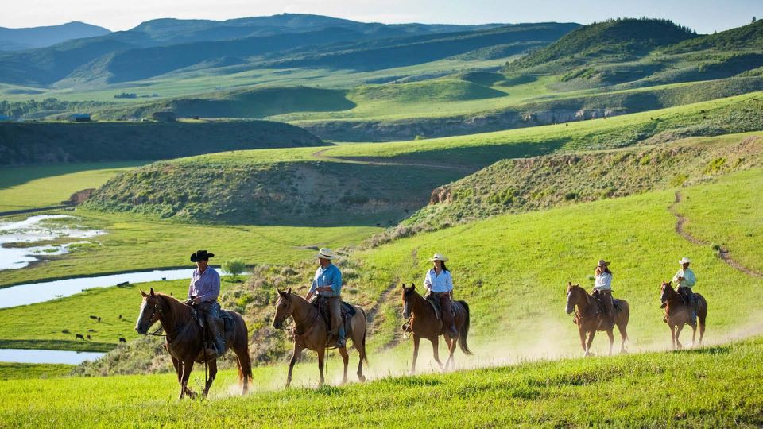

$2,500,0003 Bd · 3 Ba · 2,717 SF43370 County Road 36, Steamboat SpringsOffered by Wayne Ranieri · RE/MAX Partners
Keep Exploring
More corners of the valley.

West Steamboat & US 40
The western gateway — newer neighborhoods and the area's growth edge, minutes from downtown along the highway.
Explore West Steamboat & US 40 →
Downtown
Historic Lincoln Avenue and Old Town — walkable, warm, and steps from the Yampa River and the hot springs. In-town living at its most classic.
Explore Downtown →
Elk River Area
North of town along the Elk River — ranch land, acreage, and valley-floor properties with room to breathe and big-sky views.
Explore Elk River Area →